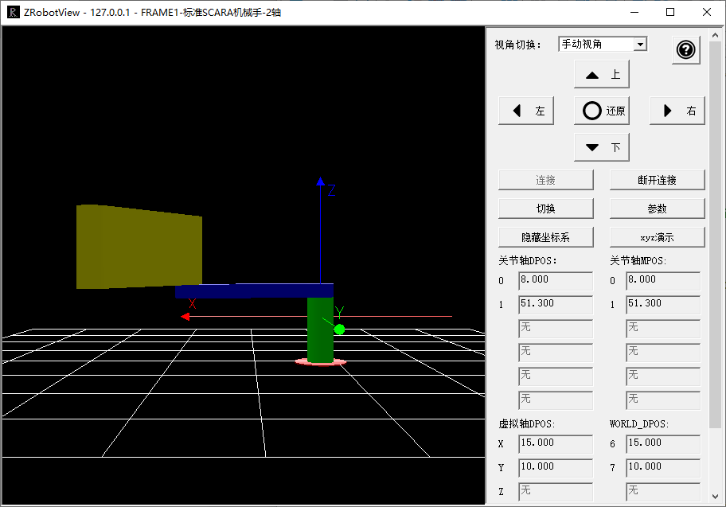

|
类型 |
同步运动指令 | ||||||||||||||||||||||||||||||||||||||||||||||||||
|
描述 |
将当前关节坐标系的目标位置与虚拟坐标系的位置关联。 CLUTCH_RATE=0时关节坐标系的运动速度和加速度受SPEED等参数的限制。
当关节轴告警等出错时，此运动会被CANCEL。 不要在虚拟轴高速运动中CANCEL此运动，会引起轴高速运动中停止。 此命令LOAD时会自动修改虚拟轴的坐标，使得与关节轴一致，因此调用后需要WAIT LOADED后才开始运动。 连接过程中不要修改虚拟轴的坐标，或是调用DATUM等可能改坐标的运动，这样会导致关节轴快速运动到新的虚拟位置。 CONNFRAME生效后，关节轴的MTYPE为33，此时无法直接运动关节轴，必须通过运行虚拟轴来间接运动关节轴，当要直接移动关节轴时，先调用CANCEL取消CONNFRAME，再运动关节轴。 当虚拟轴和实际轴都是旋转轴时，例如末端旋转轴，虚拟轴和实际轴的脉冲当量注意要一致。 | ||||||||||||||||||||||||||||||||||||||||||||||||||
|
语法 |
CONNFRAME(frame，tablenum, viraxis0, viraxis1,[…]) frame：坐标系类型，1- scara（如需针对特殊的机械手类型定制，请联系厂家） tablenum：存储转换参数的TABLE位置；frame=1时，依次存放：第一个关节轴长度，第二个关节轴长度，第一个关节轴一圈脉冲数，第二个关节轴一圈脉冲数等，详情参见机械手手册的说明 viraxis0：虚拟坐标系第一个轴 viraxis1：虚拟坐标系第二个轴 […]：虚拟坐标系第N个轴，此运动轴可以是实际轴，具体由机械手类型确定
FRAME机械结构一览表 详细说明请查看《正运动机械手指令说明》文档。 其他特殊的机械结构如需支持请联系厂家。
| ||||||||||||||||||||||||||||||||||||||||||||||||||
|
适用控制器 |
通用 | ||||||||||||||||||||||||||||||||||||||||||||||||||
|
例子 |
DIM L1,L2 L1=10 '第一个关节轴长度 L2=10 '第二个关节轴长度 BASE(0,1) '关节轴号是0，1 ATYPE=1,1 UNITS=10,10 '脉冲当量，以度为单位 DPOS=0,0 '设置关节轴的位置，此处要根据实际情况来修改 BASE(6,7) '虚拟轴号6，7 ATYPE=0,0 '设置为虚拟轴 TABLE(0,L1,L2,3600,3600) '参数存储从TABLE(0)开始存储，两个关节的长度和一圈脉冲数，电机一圈3600个脉冲 UNITS=1000,1000 '此脉冲当量要提前设置，中途不能变化 BASE(0,1) CONNFRAME(1,0,6,7) '建立逆解，轴0/1的坐标根据轴6/7来计算运动关节轴 WAIT LOADED BASE(6,7) MOVEABS(15,10) '虚拟轴发送运动指令 END
连接机械手仿真工具查看运行效果如下图：  | ||||||||||||||||||||||||||||||||||||||||||||||||||
|
相关指令 |